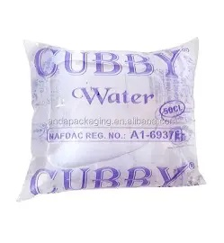
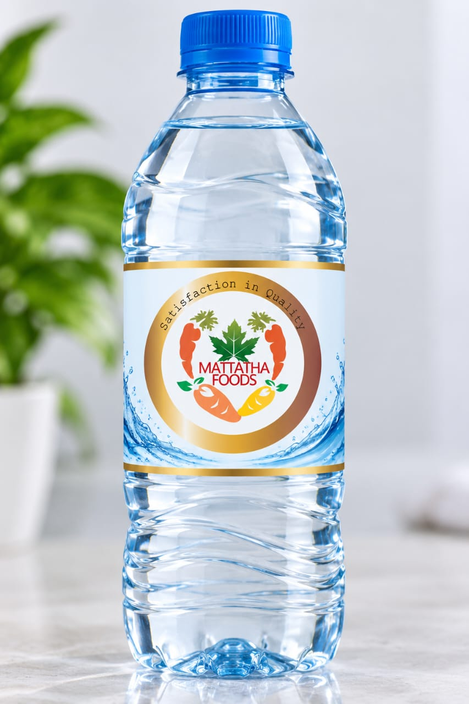

Water is an essential part of everyday life, and staying hydrated is important for maintaining good health and overall well being. Our Sachet water provides a convinent and affordable way for people to enjoy drinking water wherever they go.
Our sachet water is suitable for different occassions, whether you are at home, in school, at work, travelling or attending an event. It is packaged in easy to carry sachets, making it a practical choice for individuals, families, businesses and retailers.
We understand the importance of safe and hygenically packaged drinking water. That is why we place great importance on product quality, proper handling and packaging standards.
Why choose our Sachet water?
- Odourless and tasteless water quality
- It is convinient and easy to carry
- It is a refreshing way to stay hydrated
Our sachet water is more than just a product, it is an everyday necessity made available with convinience and affordability in mind.

Enjoy refreshing hydrating with our bottled water, designed for customers who appreciate convinience, portability and quality. Whether you are attending a meeting, travelling, exercising, relaxing at home or organizing an event, our bottled water is a great choice!
Bottled water offers a neat and convinient way to enjoy drinking water without worrying about carrying an open container. It's secure packaging makes it suitable for different environments and occassion.
We aim to provide bottled water that meets customer's everyday hydration needs while maintaining good packaging and quality standards.
Why choose our bottled water?
- Odourless and tasteless water
- It is easy to store and transport
- It is great for homes, offices, resurants, etc
- It is a simple and refreshing way to stay hydrated
Whether you need a bottle for personal use or several cartons for an event, our bottled water offers convinience you can count on.

Looking for something crunchy, tasty and satisfying? Our plantain chips are the perfect snack for anyone who enjoys a delicious treat. Made from plantains and prepared into cripsy chips, they offer a delightful combination of taste, texture and enjoyment.
Plantain chips are a popular snack enjoyed by both young and old. They are perfect for different moments, whether you are relaxing at home, watching a movie or spending time wth friends.
Why choose our plantain chips?
- They are delicious and have an enjoyable taste
- They have cripsy textures that make every bite good
- They are conviniently packaged
- It's a great snack to share with friends and family.
Our plantain chips brings a little extra hapiness to lunch time. Whether you enjoy them alone or share them with others, they are a tasty choice for every occasion.